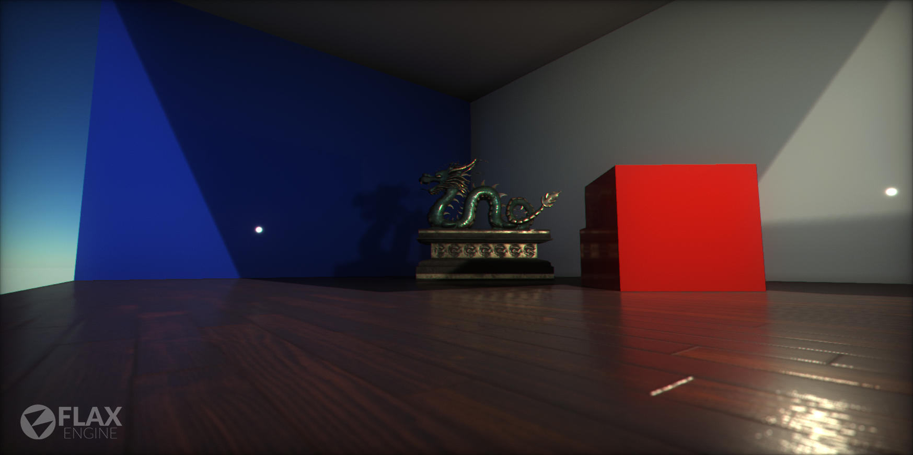
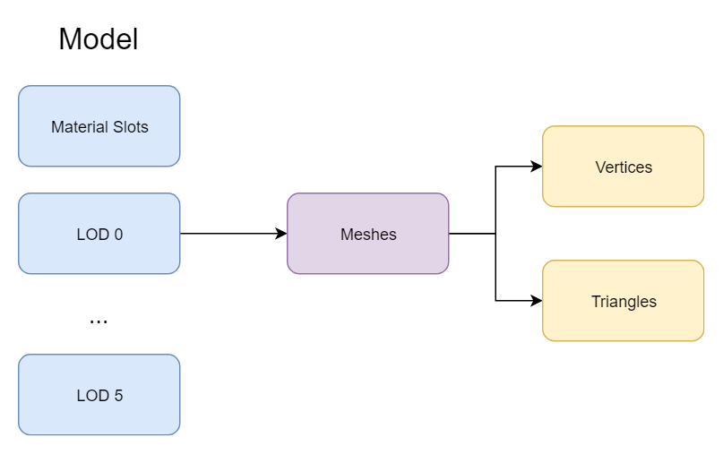
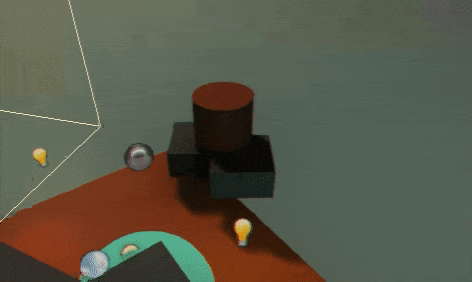

Models

Models are one of the most important parts of games. Player characters and whole environments can be created using them. Flax supports importing model files created by using the most common 3D modeling software (e.g. Maya, 3dsMax, Blender) or generating procedural geometry.
A Model asset contains a collection of Level Of Details (shorten as LOD) and Material Slots. Each LOD contains a collection of meshes to draw. During model rendering, each mesh uses a specific material slot which can hold the default value or be overridden by a Static Model.

Note
The maximum amount of levels of details for a model is 6. Also, each LOD can contain up to 4096 meshes.
A mesh consists of triangles arranged in 3D space to create the impression of a solid object. A triangle is defined by its three corner points (called vertices). In the Mesh class, the vertices are all stored in a single array and each triangle is specified using three integers that correspond to indices of the vertex array. The triangles are also collected together into a single array of integers; the integers are taken in groups of three from the start of this array, so elements 0, 1 and 2 define the first triangle, 3, 4 and 5 define the second, and so on. Any given vertex can be reused in as many triangles as desired.
Model LOD switching
Flax supports dynamic model LODs switching based on a model instance screen size (in percentage). Here is an example of this feature:

By enabling Use Dithered LOD Transition option on model materials you can use smooth LOD transitions that reduce popping artifacts and produce a seamless way to reduce geometry complexity in the scene.

In some cases, eg. during cut-scenes it may be required to increase the visual quality of the scene and ignore the lower LODs. To achieve this you can apply the Model LOD Bias per view using the following C# code:
var view = MainRenderTask.Instance.View;
view.ModelLODBias = 2;
MainRenderTask.Instance.View = view;
or adjusting it per model instance using LOD Bias and Forced LOD properties.
Importing models
To learn about importing model assets and adjusting import settings read the dedicated page here.
Flax supports generating LODs automatically during source asset importing. When importing model file simply check the Generate LODs property (under the Level Of Detail group) and adjust the settings.
Using models
Model assets are used by many parts of the engine. The most common case is by creating a Static Model. That actor type renders a model and allows overriding some of its properties like shadow casting or the material slots collection. To learn more about it see the dedicated page here.
Procedural geometry
Flax provides a C# scripting API to generate procedural mesh geometry offline or at runtime. A model created from code can have all the properties as an imported one, although there are some limitations like no baking lightmaps or reduced amount of LODs. However, procedural models can be saved to an asset file in the editor and then used in a game. This feature can be used by Editor Plugins.
To learn more about creating procedural meshes see the tutorial here.
Geometry instancing
Flax supports hardware geometry instancing out of the box. During scene rendering all model instances that use the same model and materials are batched and rendered at once to provide ultra-high performance. Flax can merge thousands of mesh instances into just a single draw call as long as they are using the same material. Instancing and draw call batching is enabled by default on platforms that support it.
Vertex Painting
Another important topic related to models is Vertex Painting. It is a process of applying custom colors to the model geometry represented by the vertices of the mesh. This technique can be used to customize a model instance in the level. For instance, a wall material can use the red channel of the vertex color to display wet areas. Then a level designer can paint wall vertices to make a certain part of the model appear wet. To learn more about this process see the related documentation here.
Vertex properties
Flax uses flexible model data format. Mesh can have up to 3 vertex buffers and one index buffer in 16-bit or 32-bit format layout. Each vertex buffer can defien own layout. By default, the first one contains position, the second one general components (texcoords, normals, tangents, skinning), the third one contains vertex colors (to easly swap it with painted instance buffer when drawing mesh). Vertex data is highly compressed to reduce memory usage and optimize the rendering performance.
Model Vertex Layout

You can inspect vertex format in the imported model under Vertex layout section in Meshes tab.
GPU Vertex Layout
When creating custom vertex buffers or vertex data use GPUVertexLayout with array of VertexElement.
Example code:
using System.Runtime.InteropServices;
[StructLayout(LayoutKind.Sequential)]
public struct MyVertex
{
public Float3 Position;
public Half2 TexCoord;
public FloatR10G10B10A2 Normal;
// Gets the layout for this structure.
static GPUVertexLayout GetLayout()
{
return GPUVertexLayout.Get([
new VertexElement(VertexElement.Types.Position, 0, 0, false, PixelFormat.R32G32B32_Float),
new VertexElement(VertexElement.Types.TexCoord, 0, 0, false, PixelFormat.R16G16_Float),
new VertexElement(VertexElement.Types.Normal, 0, 0, false, PixelFormat.R10G10B10A2_UNorm)
]);
}
}
Example Vertex Layout
Here is a list of common vertex format:
Vertex Buffer 0:
- Float3 Position
Vertex Buffer 1:
- Half2 TexCoord
- FloatR10G10B10A2 Normal
- FloatR10G10B10A2 Tangent
Vertex Buffer 2 (optional):
- Color32 Color